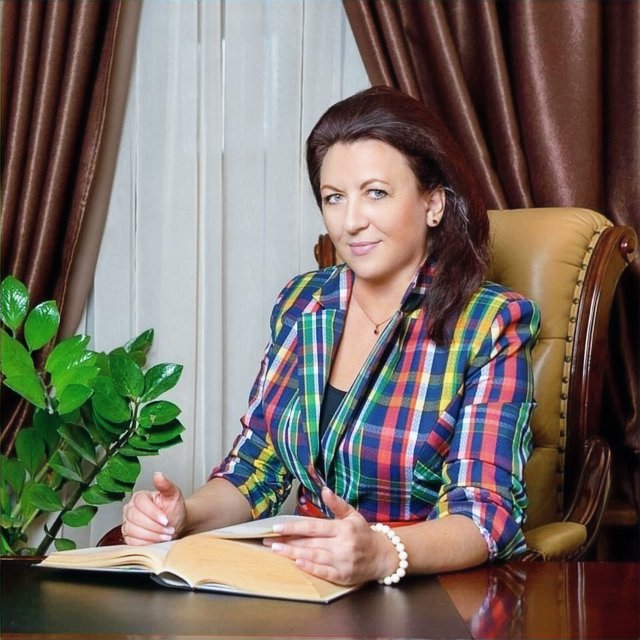

Запрошую до безпечного простору для вашого зцілення та розвитку



Магістр клінічної психології та сертифікований гештальт-терапевт із більш ніж 15-річним досвідом у приватній психотерапевтичній практиці, яку веду з 2008 року.
Основні напрямки моєї професійної діяльності охоплюють роботу з кризовими та тривожними станами, психосоматичними розладами, а також з особливостями жіночо-чоловічих і дитячо-батьківських стосунків.
Я спеціалізуюся на підтримці клієнтів у подоланні травматичних переживань та надаю простір для безпечного та глибокого емоційного зцілення.
Моя місія — допомогти кожній людині знайти внутрішню рівновагу, відновити зв'язок із собою та своїм оточенням, а також розвивати стосунки, що базуються на взаєморозумінні й підтримці.
Дізнатися більше →